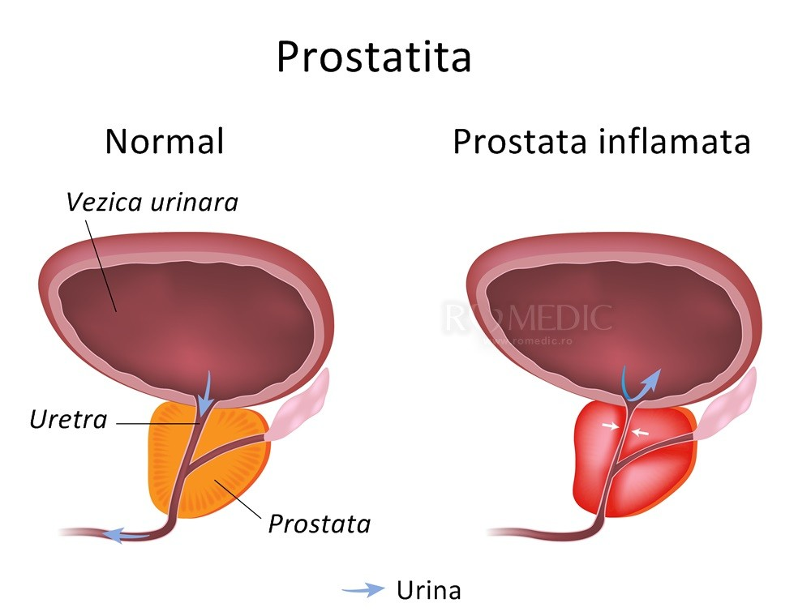
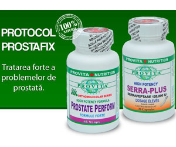

Prostatita - cauze, diagnostic și tratament
2020.10.01 22:57
Sari la conținut Meniu EA EL Cuplu Sănătate sexuală Blog Sexshop Meniu EA EL Cuplu Sănătate sexuală Blog Sexshop
Prostatita cauze, diagnostic, tratamente medicale, remedii naturiste și suplimente naturale
Prostatita este o afecțiune inflamatorie a prostatei. Este destul de frecventă și, în unele cazuri, poate provoca probleme serioase bărbaților care nu îi acordă atenția cuvenită și nu urmează tratamentul corespunzător.
Prostata este o glandă, în formă de alună, situată între vezică și penis, în apropierea rectului. Componentă importantă a sistemului reproducător masculin, prostata are ca funcționalitate principală producerea unui fluid alb vâscos, care intră în componența lichidului seminal. Acest fluid este esențial pentru fertilitatea bărbaților.
Cuprins articol
1 Tipuri de prostatită 2 Cauze și transmitere 3 Simptome 4 Diagnostic 5 Complicații 6 Tratament medical 7 Suplimente naturale recomandate 8 Remedii și tratamente naturiste pentru prostatită 9 Perne pentru prostată 10 Alte sfaturi și soluții utile 11 Profilaxie 12 În concluzieSpre deosebire de alte afecțiuni ale prostatei, precum hiperplazia benignă de prostată sau cancerul de prostată , care afectează bărbații mai în vârstă, prostatita poate afecta bărbați de orice vârstă. Conform statisticilor, prostatita este răspunzătoare pentru aproximativ 25% dintre vizitele la doctor ale bărbaților tineri și de vârstă mijlocie, care acuză probleme ale sistemului genital/urinar.
Prostatita poate afecta bărbații de toate vârstele, motiv pentru este important să te familiarizezi cu metodele de prevenție indiferent de câți ani ai. În Statele Unite ale Americii, de exemplu, prostatita cronică este principalul motiv pentru care bărbații sub 50 de ani se prezintă la medic.
Tipuri de prostatită
Prostatita este adeseori descrisă ca fiind o infecție a prostatei, dar există multe cazuri în care boala este reprezentată de o simplă inflamație, fără nici un semn de infecție. Mai exact, statisticile ne arată că doar între 5 și 10% dintre cazurile diagnosticate sunt provocate de infecții bacteriene. Astfel, în funcție de cauze (bacteriene sau nebacteriene) și modul de manifestare (acută sau cronică), există mai multe tipuri de prostatită:
Prostatita acută bacteriană
Este unul dintre cele mai rar întâlnite tipuri de prostatită. Are simptome mai severe decât celelalte tipuri și este relativ mai ușor de identificat și de tratat. Infecția bacteriană va fi tratată cu antibiotice, iar simptomele se vor ameliora cu medicamente anti-inflamatorii, după caz.
Prostatita cronică bacteriană
Nici acest tip nu este foarte des întâlnit, fiind o formă mai gravă a prostatitei acute. Stadiul cronic al bolii apare de obicei atunci când bolnavul nu tratează corespunzător prostatita bacteriană acută sau când apare o anomalie la nivelul prostatei (cum ar fi îngustarea uretrei sau adenomul de prostată ), ceea ce pune bazele unei infecții a tractului urinar. Tratamentul este puțin mai complex decât pentru boala aflată în stadiul acut, deoarece se impune mai întâi eliminarea țesutului în exces de la nivelul prostatei și abia apoi se pot administra antibiotice.
Prostatita cronică nebacteriană/ Sindromul durerii cronice pelvine
Este identificată în circa 90% din cazurile diagnosticate cu prostatită, fiind așadar una dintre cele mai frecvente tipuri ale acestei boli. Ea poate afecta bărbații de orice vârstă și este foarte periculoasă pentru organism deoarece este o afecțiune cronică, lucru care face tratamentul lung și dificil.
Cauze și transmitere
Prostatita bacteriană este declanșată de cele mai multe ori de microbi ce fac parte din flora digestivă care invadează tractul urinar și se dezvoltă generând o infecție urinară, care se extinde până în prostată. Alți microbi care ajung în prostată pot fi transmiși pe cale sexuală. În unele cazuri, însă, prostatita poate fi cauzată și de microbi ce intră în sânge și ajung în prostată.
Printre factorii de risc importanți asupra cărora avertizează de obicei medicii urologi se numără sexul anal, bolile cu transmitere sexuală, infecțiile recente ale tractului urinar, cateterizarea urinară recentă și efectuarea citoscopiilor. Nu în ultimul rând, trebuie menționat și faptul că boala este retrogradă, ceea ce înseamnă că bărbații care au suferit și s-au tratat de prostatită cronică bacteriană sunt predispuși la dezvoltarea unui nou episod de prostatită acută bacteriană.
Cauzele exacte ale prostatitei cronice nebacteriene (sindromul durerii cronice pelvine) nu sunt cunoscute. Cercetătorii cred că, deși nu este cauzată de o infecție bacteriană, există posibilitatea să fie cauzată de un micro-organism. Există, de asemenea, ipoteze care incriminează compoziția chimică a urinei, afecțiuni ale sistemului nervos din zona zonă sau modul în care sistemul imunitar a răspuns unei infecții urinare în trecut.
Simptome
Fiecare tip de prostatită generează mai multe simptome. Acestea nu se manifestă identic pentru fiecare bărbat și sunt asemănătoare altor afecțiuni ale tractului urinar. Lista completă de simptome ce pot semnala instalarea prostatitei este următoarea:
Urinări frecvente cu cantități relativ mici de urină; Nevoi frecvente de urinare în timpul nopții; Senzație de arsură în timpul urinării; Senzație de golire incompletă a vezicii după urinare; Dificultate în pornirea jetului urinar; Întreruperea jetului urinar; Presiune scăzută a jetului urinar; Dureri în zona spatelui, zona testiculară, zona anală sau a abdomenului inferior; Dureri în zona dintre scrot si anus; Dureri resimțite la nivelul penisului sau uretrei; Dureri în timpul sau după ejaculare; Infecții urinare; Febră sau frisoane.Nu trebuie să le experimentezi pe toate pentru a lua decizia de a te prezenta la medic. Dacă aștepți atât de mult s-ar putea să fie deja prea târziu pentru un tratament rapid și ușor.
În cazurile de prostatită cronică (bacteriană sau nebacteriană) simptomele durează timp de 3 luni sau mai mult și au o severitate medie. Prostatita acută bacteriană generează , în schimb, simptome foarte severe, ce au nevoie de îngrijire medicală imediată, pentru a evita apariția complicațiilor.
Este important de reținut faptul că există și cazuri în care prostatita nu prezintă nici un fel de simptom. În aceste situații boala poate fi diagnosticată atunci când se fac investigații de rutină asupra tractului urinar. Vestea bună este faptul că acest tip de prostatită nu cauzează nici un fel de complicații și nu necesită tratament.
Diagnostic
Medicul urolog va începe diagnosticarea prostatitei cu un examen fizic general și cu informații obținute din istoricul tău medical. Următorul pas este reprezentat, în cele mai multe cazuri, de analize de laborator care vor determina tipul exact al prostatitei cu care te confrunți.
Investigațiile medicale pot include următoarele:
Efectuarea de culturi urinare pentru a identifica prezența și tipul bacteriilor din urină; Efectuarea de culturi din secrețiile prostatice recoltate prin masarea prostatei; Tușeul rectal scoate în evidență nivelul de inflamare a prostatei, care poate da de gol o infecție dacă are un volum mărit și este dureroasă la atingere; Palparea abdomenului se face pentru identificarea unui eventual blocaj complet al urinei în vezică; Examenul citobacteriologic al urinei este un test de laborator al cărui rezultate identifică bacteriile ce se fac vinovate de apariția infecției.Metoda de diagnosticare va depinde în foarte mare măsură de decizia medicului specialist, de starea ta generală de sănătate și de intensitatea simptomelor resimțite.
Complicații
Chiar dacă cele mai multe cazuri de prostatită se pot vindeca relativ ușor cu ajutorul medicamentației, bolnavii care nu oferă o atenție corespunzătoare primelor stadii ale bolii riscă să agraveze afecțiunea și să ajungă astfel la prostatită cronică. În acest stadiu cei mai mulți vor avea nevoie de spitalizare din cauza intensității simptomelor.
Bărbații care suferă pe termen lung de prostatită pot dezvolta anxietate, stres și depresie, lucruri care scad semnificativ nivelul de calitate al vieții. De asemenea, complicațiile medicale nu sunt nici ele de neglijat, bolnavii fiind riscând să dezvolte probleme precum sepsis sau abces prostatic.
Tratament medical
Tratamentul prostatitei depinde în mare măsură de stadiul (acută sau cronică) și de cauza bolii (bacteriană sau nebacteriană). La modul general, antibioticele și intervențiile chirurgicale sunt cele care reușesc să amelioreze simptomele pe termen scurt și să îndepărteze boala cu totul pe termen lung.
Tratamentul prostatitei bacteriene acute are ca principal obiectiv îndepărtarea bacteriilor și infecțiilor din organism și oprirea procesului de dezvoltare a bolii. În acest scop se folosesc de obicei antibiotice, medicamente pentru febră (antipiretice) și medicamente pentru durere. Medicul va mai recomanda pacientului consumul de multe fluide și cât mai multă odihnă care să permită organismului recuperarea și întărirea sistemului imunitar.
Tratamentul prostatitei bacteriene cronice se bazează tot pe antibiotice, însă acestea se vor administra pe perioade mai lungi de timp. Aproximativ 75% dintre cazurile de prostatită bacteriană cronică se rezolvă cu tratamentul antibiotic.
Există și cazuri în care se va apela la intervenții chirurgicale, acestea fiind necesare atunci când medicamentele nu își fac efectul dorit și când pacientul experimentează destul de des infecții ale tractului urinar. Intervenția chirurgicală are ca principal obiectiv îndepărtarea părților infectate ale prostatei sau a calculilor prostatici printr-un procedeu denumit prostatectomie transuretrală. Această metodă de tratament nu are întotdeauna șanse de succes, însă.
Pentru tratamentul prostatitei cronice nebacteriene , se va încerca, în principal, reducerea severității simptomelor. Astfel, vor fi recomandate medicamente alfa-blocante, care relaxează mușchii vezicii urinare și prostatei, ușurând astfel fluxul de urină și reducerea simptomelor. În funcție de starea exactă a pacientului, doctorul specialist, mai poare recomanda și medicamente hormonale, pentru reducerea inflamației prostatei.
Cei care suferă de prostatită cronică nebacteriană mai pot obține ameliorări ale simptomelor și prin evitarea mâncărurilor picante, reducerea consumului de cofeină și băuturi acide. De asemenea, se recomandă evitarea unor activități fizice, precum ciclismul, care pot înrăutăți situația.
Masajul prostatic reprezintă o metodă de tratament complementar. Este o metodă mai veche care a început să fie din nou folosită de unii medici. Masajul prostatic se efectuează prin introducerea unui deget acoperit de o mănușă lubrifiată în rect pentru a se apăsa de câteva ori pe prostată. Rezultatele sale nu sunt încă 100% confirmate de oamenii de știință, dar se presupune că masajul ajută la deblocarea canalelor prostatice, îmbunătățind astfel circulația sanguină și maximizând efectul medicamentelor administrate.
Suplimente naturale recomandate
Există multe suplimente naturale eficiente și foarte utile pentru prevenirea și vindecarea afecțiunilor prostatei. Suplimentele naturale pe care le poți cumpăra din farmaciile naturiste sau din magazinele online de profil se dovedesc a fi foarte utile împotriva prostatitei atunci când sunt folosite preventiv sau ca adjuvante în tratamentele medicamentoase.
Îți prezentăm în continuare câteva produse pe care le-am ales prin prisma ingredientelor pe care le conțin și a rezultatelor pe care le-au avut pentru alți utilizatori.
Prostect
Supliment natural inovativ, Prostect se bazează pe ingrediente complet naturale pentru a trata prostatita cronică (sau acută) și a ameliora simptomele neplăcute ce însoțesc această afecțiune.
Prostect conține ghimpe, ienupăr, urzică albă, pufuliță, rădăcină de păr și altele. Datorită compoziției naturale, Prostect nu provoacă alergii (hipoalergic) și nu are efecte secundare.
Se administrează ușor (sub formă de picături) și elimină durerile de rect și testicule, restabilește urinarea normală și îmbunătățește sănătatea sexuală masculină. Mai multe detalii
Protocol Prostafix
Problemele de prostată precum adenomul de prostată , prostatita sau cancerul de prostată găsesc un inamic foarte dur în acest supliment natural bogat în ingrediente care atacă direct aceste boli și ajută sistemul imunitar să se repună mai rapid pe picioare.
Aceste efecte benefice sunt date de conținutul bogat în fitosteroli, extracte din plante, aminoacizi esențiali, zinc și seleniu.
Disponibil la: Plantum .
Quercetin + Bromelain
Este un produs natural foarte eficient împotriva prostatitei deoarece încetinește procesul de inflamare a prostatei. Acest lucru este atins cu ajutorul substanței Quercetin, ce aparține grupului de pigmenți de plante numite flavonoide.
Quercetinul dispune de puternice proprietăți antiinflamatoare, antioxidante și antihistaminice.
Disponibil la: Plantum .
Prosta Repair Plus
Este un supliment natural cu mai mult de 30 de substanțe active care luptă împotriva afecțiunilor de prostată.
Acestă formulă complexă, bazate exclusiv pe ingrediente naturale, oferă efecte puternice antiinflamatoare foarte eficiente și ajută la stabilirea unui echilibru în metabolismul hormonilor sexuali masculini.
Poate fi folosit în tratamentul prostatitei, dar poate fi folosit și în scop preventiv de către bărbații peste 40 de ani.
Disponibil la: Plantum .
Prostate Optimizer
Este un supliment natural ce conține o mulțime de ingrediente deosebit de utile pentru buna funcționare a prostatei. Amintim aici extractul din fruct de palmier pitic, acizii grași Omega 3, beta-caroteni, fitosteroli, extractul din polen de secară și uleiul de pește.
Unul dintre efectele sale principale constă în reducerea nivelului de dihidrotestosteron, ceea ce permite prostatei să se mențină la un nivel sănătos, eficientizând astfel procesul de vindecare.
Disponibil la: Plantum .
Ceai Prostată
Este un remediu natural foarte util pentru pacienții diagnosticați cu prostatită sau alte probleme ale prostatei deoarece are capacitatea de a asigura o bună funcționare a acestui organ și de a menține o urinare normală pentru bărbații de peste 45 de ani.
Ingredientele naturale (ghimpe, pufuliță, urzică moartă, flori de gălbenele, muguri de pin, splinuță, coada calului) îi oferă o compoziție complexă, bogată în principii active.
Disponibil la: Plantum și Vegis .
Prostate Perform
Este un supliment natural bogat în fitosteroli (steroli și sterolini), care ajută la inhibarea 5-Alfa reductazei, lucru ce blochează pur și simplu transformarea testosteronului liber în dihidrotestosteron, una dintre principalele cauze ale prostatitei și a altor afecțiuni de prostată.
Alte ingrediente excelente pentru organismele ce se confruntă cu prostatită pe care le găsim în acest produs sunt extractul din semințe de dovleac, vitamina E, extractul din rădăcină de urzică, zincul și licopenul.
Disponibil la: Plantum .
Prostate Blend
Ajută foarte mult la reducerea conversiei testosteronului liber în dihidrotestosteron, blochează receptorii de dihidrotestosteron de la nivelul prostatei și îmbunătățește calitatea lichidului prostatic.
Toate aceste duc la încetinirea procesului de avansare a prostatitei și grăbesc vindecarea. Ingredientele sale includ extracte din palmier pitic, semințe de dovleac, pătrunjel, urzică și brusture.
Disponibil la: Plantum și Vegis .
Remedii și tratamente naturiste pentru prostatită
Există mai multe soluții naturale de care poți profita pentru a spori efectul tratamentului medicamentos și pentru a-ți ajuta sistemul imunitar să se pregătească mai bine de lupta împotriva infecțiilor. Iată câteva dintre acestea mai jos.
Urzica
Urzica funcționează ca un stimulent natural pentru sistemul imunitar și ajută la creșterea producției de limfocite anti-tumorale. Totodată, extractul de urzică este cunoscut pentru abilitățile sale antiinflamatoare, ajutând astfel încetinirea măriri în dimensiuni a prostatei.
Se poate administra prin ceaiuri, sucuri sau prin diferite suplimente naturale pe care le poți cumpăra din farmaciile naturiste sau magazinele online de profil.
Roșiile
Consumate proaspete, sub formă de sucuri sau în diverse mâncăruri roșiile sunt delicioase și oferă multiple beneficii sănătoase, datorită conținutului ridicat de licopen.
Această substanță este un carotenoid foarte benefic pentru organism, studiile arătând chiar că bărbații ce includ licopenul din belșug în alimentația lor își reduc foarte mult riscul de a dezvolta cancer sau alte afecțiuni de prostată.
Pătlagina
Este o plantă foarte bogată în zinc, o substanță foarte importantă pentru echilibrarea hormonului masculin. Acest echilibru împiedică mărirea dimensiunilor prostatei, iar zincul funcționează și ca un antiinflamator foarte eficient. Zincul mai poate fi găsit și în orz sau în ovăz verde.
Ulei de oregano sălbatic
Extras din plante sălbatice, uleiul de oregano este bogat în substanța Carvacrol, considerată ca având unele dintre cele mai eficiente efecte naturale antivirale, antiinflamatorii și antibacteriene de pe piață, lucru care ajută astfel la stimularea sistemului imunitar și la prevenirea unora din cauzele prostatitei.
Datorită puternicelor proprietăți antibacteriene, antifungice și antivirale, uleiul de oregano poate fi folosit cu succes în tratamentul prostatitei bacteriene cu rezultate superioare antibioticelor și fără efectele secundare ale acestora.
Pătrunjelul
Poți folosi frunzele de pătrunjel pentru prepararea unui suc care, administrat în cantitate de 1 pahar în fiecare zi, ajută la combaterea bolilor ce atacă aparatul uro-genital și la întărirea sistemului imunitar.
Varza
Persoanele care consumă o cantitate mare de varză au mai puține riscuri să dezvolte cancer de prostată datorită substanțelor pe care această plantă le conține și care luptă împotriva celulelor canceroase: indoli, izotiocianaţi, monoterpene și sulfarafan.
Mai mult decât atât, varza are și puternice efecte antiinflamatoare, ceea ce ajută la reducerea dimensiunilor prostatei.
Tuia
Este o plantă recomandată pentru bărbații care suferă de prostatită, printre altele, datorită efectelor antiinflamatoare și antiinfecțioase pe care le manifestă la nivelul aparatului genito-urinar. Mai mult decât atât, planta are și o acțiune de întărirea a sfincterelor urinare, lucru care se poate dovedi de folos în cazul persoanelor care au probleme cu controlul micțiunilor.
Se administrează prin introducerea unei lingurițe de alcoolatură de tuia în puțină apă, de 3 ori pe zi. Curele pot ține 3 săptămâni, după care trebuie să se facă o săptămână pauză.
Palmierul pitic (Saw Palmetto)
Este cunoscut pentru efectele sale puternice de inhibare a producției de testosteroni, hormonii care stimulează creșterea celulelor prostatei. Se încetinește astfel întregul proces de mărire a prostatei.
Această plantă este foarte utilă împotriva prostatitei și a altor afecțiuni ale prostatei deoarece exercită un efect terapeutic foarte puternic asupra uretrei superioare și asupra prostatei în sine. Palmierul pitic este bogat în ulei volatil, în saponine steroidiene, în falovonoide, acizi grași și polizaharide, planta având datorită lor acțiuni tonice și anabolizante pentru organism.
Propolisul
Este recomandat pentru mai multe afecțiuni ale prostatei, iar cele mai bune rezultate le are împotriva prostatitei, hipertrofiei și adenomului de prostată.
Se poate administra de 3 ori pe zi cu câte 30 de picături de tinctură puse pe o felie uscată de pâine. La fel de eficiente și benefice pentru organism sunt și supozitoarele cu propolis.
Dovleacul
Semințele sau uleiul de dovleac au efecte foarte benefice pentru organismele care luptă împotriva prostatitei și a altor afecțiuni ale prostatei, deoarece ajută la echilibrarea hormonilor în organism, eliminând dihidrotestosteron, un hormon produs de către organism în locul testosteronului atunci când prostatita începe să se dezvolte.
Dovleacul este bogat în vitamine, fosfor, siliciu, calciu, potasiu, fier și magneziu, ajutând astfel organismul să-și întărească sistemul imunitar și să prevină mărirea în dimensiuni a prostatei.
Semințele de susan
Un studiu publicat în Jurnalul Indian de Urologie a demonstrat că zincul este o substanță deosebit de utilă pentru buna funcționare a prostatei, iar semințele de susan sunt foarte bogate în acest mineral.
De obicei, bărbații care suferă de prostatită, adenom de prostată sau cancer de prostată au cantități foarte mici de zinc în organism, lucru care dăunează sistemului imunitar. Asigură-te că incluzi în alimentația ta mâncăruri sau suplimente bogate în zinc.
Omega 3
Reprezintă acizi grași foarte utili pentru sănătatea organismului nostru, manifestând o mulțime de efecte benefice asupra sistemului imunitar. Acizii grași Omega 3 nu pot fi dezvoltați de organism, astfel încât trebuie să-i cauți și să-i consumi prin alimentație.
Reduc colesterolul, îmbunătățesc sănătatea cardiovasculară și stimulează sistemul imunitar, protejând astfel organismul împotriva dezvoltării infecțiilor și al altor factori ce pot cauza prostatita.
Perne pentru prostată
Dacă suferi de o inflamație a prostatei cunoști foarte bine senzația de durere resimțită la fiecare așezare pe scaun. Pernele pentru prostată sunt perne medicinale concepute special pentru a oferi suport, dar fără a pune presiune pe zona dureroasă a prostatei.
Pernele ortopedice pentru prostată au formă de potcoavă și sunt realizate din spumă cu memorie, gel sau material textil. Sunt foarte eficiente, au un design modern plăcut și pot fi folosite acasă, la birou sau în timpul călătoriilor mai lungi. Găsești mai jos câteva modele de perne pentru prostată de calitate.
Pernă din gel MST713
Este o pernă ergonomică, cu interior din gel, care permite adaptarea perfectă la formele corpului și distribuția uniformă a greutății.
Este prevăzută și cu o husă din țesătură respirabilă, care poate fi spălată. Perna pentru prostată MST713 are o dimensiune de 43x43x5cm. Mai multe detalii .
Pernă pentru prostată tip potcoavă din spumă memory foam
Este o pernă medicinală din spumă cu memorie, recomandată în caz de escare, hemoroizi, prostatită sau după operații.
Spuma cu memorie oferă un suport suficient, iar forma de potcoavă asigură o bună distribuție a greutății, fără a pune presiunea pe zona anală și pe prostată. Perna pentru prostată ST336 vine însoțită și de o husă detașabilă ce poate fi spălată. Mai multe detalii .
Perna din material viscoelastic MST718
Cu un interior din material vâscoelastic și spumă poliuretanică, perna pentru prostată MST718 asigură un suport stabil, se adaptează foarte bine formelor anatomice și protejează zona sensibilă a prostatei.
Perna MST718 pentru prostată este acoperită de o husă din material anti-alunecare, care poate fi spălată. Dimensiunile pernei sunt 40x40x4.5cm. Mai multe detalii .
Alte sfaturi și soluții utile
Îți recomandăm să ții cont de sfaturile de mai jos pentru a evita complicațiile provocate de prostatită și pentru a ameliora cât mai mult intensitatea simptomelor cu care te confrunți:
Apelează la medicul urolog cât de curând posibil după experimentarea oricărui simptom descris mai sus; Ajută tratamentul să obțină cele mai bune rezultate prin episoade lungi de odihnă și consumul a minim 2 litri de lichide în fiecare zi; Evită constipația printr-o dietă în care să incluzi alimente bogate în fibre, precum pâine integrală, cereale, fructe, legume etc. Fă cât de des posibil băi calde la nivelul regiunii pelvine; Ajută-ți organismul să se detoxifieze și să-și reducă excesul de greutate prin includerea în alimentație a cât mai multe crudități; Încearcă să menții o urinare cât mai normală pe toată durata tratamentului renunțând la tutun și alcool; Folosește planta coada-calului pentru băi de șezut reci; Aplică cataplasme de argilă pe partea inferioară a abdomenului; Folosește o pernă de prostată pentru a calma durerea și inflamția; Consumă multe ceaiuri de plante, dintre care cele mai recomandate sunt strugurii-ursului, pufulița cu flori mici și leușteanul; Apelează la cure cu argilă, punând o lingură de pulbere de argilă într-un pahar cu apă. Lasă-l peste noapte la macerat, iar dimineața amestecă-l bine și bea-l. Repetă acest lucru timp de 30 de zile.Profilaxie
Chiar dacă prostatita este o boală ce afectează un număr foarte mare de bărbați, există numeroase lucruri care ajută la prevenția ei dacă sunt introduse în stilul de viață. Iată mai jos câteva dintre cele mai eficiente:
Mergi de două ori pe an la medicul urolog pentru examinări periodice și pentru identificarea la timp a prostatitei; Evită pe cât posibil sexul anal neprotejat; Consumă lichide în cantități mari pentru a eficientiza procesul de urinare; Menține o igienă corporală foarte bună pentru a evita contractarea de bacterii; Evită consumul alimentelor rafinate și celor bogate în grăsimi sau zahăr, deoarece ele ajută la creșterea concentrațiilor testosteronului; Încearcă să eviți frigul, umezeala și așezatul pe locuri reci (pământ, ciment etc); Evită sedentarismul cât mai mult posibil. Acest lucru este valabil în special pentru bărbații care lucrează așezați (la birou, la volan etc); Încearcă să tratezi constipația imediat ce își face apariția în viața ta, deoarece pune o presiune periculoasă asupra organelor pelviene și creează mediul perfect pentru dezvoltarea bacteriilor; Încearcă să scoți din alimentație carnea, deoarece inflamează și irită organele sexuale și glanda prostatei, provocând într-un final inflamația acesteia din urmă; Alte lucruri pe care ar trebuie să le eviți sunt cafeaua, alcoolul, tutunul, condimentele, alimentele sărate, ciocolata, oțetul, băuturile pe bază de cola, cacao sau acriturile. Toate acestea au un efect iritant asupra prostatei și pot contribui la inflamarea ei.În concluzie
Prostatita nu este una dintre cele mai periculoase boli cu care se pot confrunta bărbații, în ciuda faptului că este una dintre cele mai des întâlnite afecțiuni de care suferă reprezentanții sexului masculin. Încearcă să-ți faci ordine în stilul tău de viață, renunță la lucrurile nesănătoase, mergi la medic pentru examinări periodice și urmează tratamentul corespunzător în momentul în care ești diagnosticat cu prostatită.
Sursă foto: prostrcision.com.
Bibliografie și surse de informații:
https://www.racgp.org.au/afp/2013/april/prostatitis/
https://www.healthline.com/health/prostatitis
https://www.nhs.uk/conditions/prostatitis/
https://www.niddk.nih.gov/health-information/urologic-diseases/prostate-problems/prostatitis-inflammation-prostate
https://en.wikipedia.org/wiki/Prostatitis
https://www.mayoclinic.org/diseases-conditions/prostatitis/symptoms-causes/syc-20355766
https://www.webmd.com/men/guide/prostatitis
https://medlineplus.gov/ency/article/000519.htm
https://medlineplus.gov/ency/article/000524.htm
https://draxe.com/prostatitis/
( 60 voturi, medie: 4,25 din 5)
Încarc... Copyright © 2020 Sexis.ro | Sitemap | Termeni & condiții | Despre noi | Contact Derulare înapoi până sus Acest website folosește cookie-uri, pentru a îmbunătăți experiența vizitatorilor. Am înțeles. Închide notificarea. Mai multe detalii. Mai multe detalii. Close Necesare Întotdeauna activate
Pin It on Pinterest
- Prostatita - tratament naturist - SanatateCuPlante
- Prostatita: Generalitati, Factori de risc si Tratament
- PROSTATA - Perne pentru hemoroizi, afectiuni anale, dureri ...
- Prostata: cele mai comune boli ale acesteia si ...
- Prostatita acută - cauze, simptome, diagnostic şi ...
- Prostatia cronica - Actinmed
- Adevărul despre Prostero – preț, păreri, forum, prospect ...
- Prostatita | Prostenal
- Prostatita - medicover.ro
- PROSTATITELE - rasfoiesc.com
- Prostatita - tratament naturist - SanatateCuPlante
Prostatita acuta este o infectie a prostatei si poate reprezenta o problema grava de sanatate in randul barbatilor. Prostata este un organ vecin vezicii urnare, o glanda a aparatului urogenital masculin. Mai exact, este zona de intersectie intre calea genitala si cea urinara. Rolul prostatei este de a produce o parte din lichidul seminal si de a activa spermatozoizii prin alcalinizarea ...
- Prostatita: Generalitati, Factori de risc si Tratament
Prostatita subacuta..Intrebare :) » Secțiunea: Forum medical...la un control la medic si mi-a gasit o prostatita subacuta. Mi-a prescris asa :Augmentin 1/12 ore, Flamexin 2 plicuri /zi dupa mese si Tinizol 4 pastile azi si ...ore alte 4.
- PROSTATA - Perne pentru hemoroizi, afectiuni anale, dureri ...
Prostatita - Mecanism fiziopatologic. Prostatita, in special cea care are perioade lungi simptomatice, poate cauza stress, anxietate sau depresie. Barbatii cu prostatita acuta bacteriana au durere de intensitate crescuta si pot necesita spitalizare. Majoritatea se vindeca in urma terapiei cu antibiotice.
- Prostata: cele mai comune boli ale acesteia si ...
Prostatita consta in inflamarea prostatei, adica a glandei situata exact sub vezica urinara a barbatului. Glanda prostata are rolul de a produce lichidul care transporta spermatozoizii. Prostatita cauzeaza adesea disconfort si durere la urinare. Aceasta afectiune poate aparea la orice varsta, insa ...
- Prostatita acută - cauze, simptome, diagnostic şi ...
Prostatita (inflamație sau o infecție a prostatei) este o boală complexă, ce poate avea multe modalități de manifestare. Spre deosebire de majoritatea problemelor legate de prostată, prostatita apare mai frecvent la bărbații tineri și de vârsta a doua.
- Prostatia cronica - Actinmed
Prostatita acuta bacteriana este tratata cu antibiotice, medicamente pentru febra (antipiretice) si durere (antialgige), administrare de fluide si odihna. In cazul in care urinarea nu este posibila sau in cazul in care este necesara terapia intavenoasa cu antibiotice, se indica internarea in spital.
- Adevărul despre Prostero – preț, păreri, forum, prospect ...
Prostatita este o inflamatie a glandei prostatei. Exista multe forme de prostatita, dar vom insista pe doua dintre ele: acute si cronice.Prostatita acuta – este de fapt perioada de debut a afectiunii.Prostatita cronica apare in cazul in care oamenii tolereaza afectiunea fara a apela la medic si in termen de 3-6 luni prostatita intra in faza cronica.
- Prostatita | Prostenal
Prostatita inflamatorie asimptomatica (prostatita histologica) prostatita acuta. etiopatogenie: apare datorita infectarii prostatei cu diversi germeni: Escherichia Coli, Klebsiella, Proteus, Enterobacter, Piocianic, mai rar Stafilococul auriu si Enterococul, Chlamydia sau anaerobi ca diverse specii de Bacterioides.
- Prostatita - medicover.ro
Prostatita cronică bacteriană. Prostatita cronică bacteriană este cauzată tot de infecția bacteriană, dar diferă de prostatita acută bacteriană prin faptul că prostatita cronică bacteriană persistă mai mult de trei luni, iar intervalul de timp în care aceasta se instalează este mai mare. Prostatita cronică bacteriană afectează mai frecvent bărbații între 35 și 50 ani.
- PROSTATITELE - rasfoiesc.com
Prostatita acută bacteriană generează, în schimb, simptome foarte severe, ce au nevoie de îngrijire medicală imediată, pentru a evita apariția complicațiilor. Este important de reținut faptul că există și cazuri în care prostatita nu prezintă nici un fel de simptom. În aceste situații boala poate fi diagnosticată atunci când ...
Prostatita acuta este o infectie a prostatei si poate reprezenta o problema grava de sanatate in randul barbatilor. Prostata este un organ vecin vezicii urnare, o glanda a aparatului urogenital masculin. Mai exact, este zona de intersectie intre calea genitala si cea urinara. Rolul prostatei este de a produce o parte din lichidul seminal si de a activa spermatozoizii prin alcalinizarea ...
Prostatita subacuta..Intrebare :) » Secțiunea: Forum medical...la un control la medic si mi-a gasit o prostatita subacuta. Mi-a prescris asa :Augmentin 1/12 ore, Flamexin 2 plicuri /zi dupa mese si Tinizol 4 pastile azi si ...ore alte 4.
Prostatita - Mecanism fiziopatologic. Prostatita, in special cea care are perioade lungi simptomatice, poate cauza stress, anxietate sau depresie. Barbatii cu prostatita acuta bacteriana au durere de intensitate crescuta si pot necesita spitalizare. Majoritatea se vindeca in urma terapiei cu antibiotice.
Prostatita consta in inflamarea prostatei, adica a glandei situata exact sub vezica urinara a barbatului. Glanda prostata are rolul de a produce lichidul care transporta spermatozoizii. Prostatita cauzeaza adesea disconfort si durere la urinare. Aceasta afectiune poate aparea la orice varsta, insa ...
Prostatita (inflamație sau o infecție a prostatei) este o boală complexă, ce poate avea multe modalități de manifestare. Spre deosebire de majoritatea problemelor legate de prostată, prostatita apare mai frecvent la bărbații tineri și de vârsta a doua.
Prostatita acuta bacteriana este tratata cu antibiotice, medicamente pentru febra (antipiretice) si durere (antialgige), administrare de fluide si odihna. In cazul in care urinarea nu este posibila sau in cazul in care este necesara terapia intavenoasa cu antibiotice, se indica internarea in spital.
Prostatita este o inflamatie a glandei prostatei. Exista multe forme de prostatita, dar vom insista pe doua dintre ele: acute si cronice.Prostatita acuta – este de fapt perioada de debut a afectiunii.Prostatita cronica apare in cazul in care oamenii tolereaza afectiunea fara a apela la medic si in termen de 3-6 luni prostatita intra in faza cronica.
Prostatita inflamatorie asimptomatica (prostatita histologica) prostatita acuta. etiopatogenie: apare datorita infectarii prostatei cu diversi germeni: Escherichia Coli, Klebsiella, Proteus, Enterobacter, Piocianic, mai rar Stafilococul auriu si Enterococul, Chlamydia sau anaerobi ca diverse specii de Bacterioides.
Prostatita cronică bacteriană. Prostatita cronică bacteriană este cauzată tot de infecția bacteriană, dar diferă de prostatita acută bacteriană prin faptul că prostatita cronică bacteriană persistă mai mult de trei luni, iar intervalul de timp în care aceasta se instalează este mai mare. Prostatita cronică bacteriană afectează mai frecvent bărbații între 35 și 50 ani.
Prostatita acută bacteriană generează, în schimb, simptome foarte severe, ce au nevoie de îngrijire medicală imediată, pentru a evita apariția complicațiilor. Este important de reținut faptul că există și cazuri în care prostatita nu prezintă nici un fel de simptom. În aceste situații boala poate fi diagnosticată atunci când ...
 